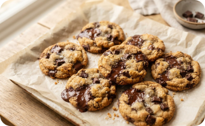

Brown Butter Cookies
Tags

Crisp edges, soft centres and pools of dark chocolate. Nutty brown butter makes these no-chill cookies a favourite for bake sales and study breaks.
Dietary & Allergens
Dietary preference: Vegetarian
Contains: Wheat / gluten, milk and egg
Substitutions & cross-contact
For a swap, try chopped milk chocolate; allergens may change. Check all ingredient labels, including chocolate, and your kitchen for possible cross-contact. Not suitable for milk, egg or wheat allergies.
Unselected allergens are not an allergen-free claim.
Ingredients
For 12 cookies
- 115 gUnsalted butter
- 100 gLight brown sugar
- 50 gCaster sugar
- 1 largeEgg
- 1 tspVanilla extract
- 160 gAll-purpose flour
- ½ tspBaking soda
- ¼ tspFine salt
- 100 gDark chocolate (cocoa, sugar), chopped
Instructions
- 1
Brown the butter
Heat the oven to 180°C (350°F). Line two baking trays with parchment. Melt the butter in a small pan over medium heat for 5 minutes, swirling until golden with brown flecks. Pour into a heatproof bowl and cool for 3 minutes.
- 2
Mix the dough
Whisk both sugars into the warm butter. Whisk in the egg and vanilla until smooth. Fold in the flour, baking soda and salt, then the chopped chocolate, just until combined.
- 3
Portion and bake
Divide the dough into 12 equal balls, six per tray, leaving 5 cm between them. Bake both trays for 10 minutes, swapping racks halfway, until edges are golden and centres look slightly soft.
- 4
Cool and enjoy
Leave on the trays for 3 minutes, then move to a wire rack. Serve warm or cool completely before storing in an airtight container for up to 3 days.